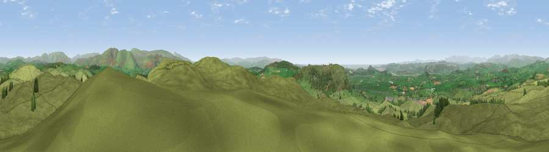

Viewpoint near Lupton
#2576 in England · top 7% of its area beats it · near Lupton · path 214 mWhere it is
The exact computed spot (SD 56225 82875). Click the marker for map links.
Public access: the nearest public right of way is about 214 m away — the final stretch may cross private land. Computed from Natural England's CRoW access layer and OpenStreetMap rights of way — not the legal definitive map. Always verify locally.
The view, rendered

A 360° render of this exact spot computed from the terrain model, tree cover and land cover — summer colours, afternoon light, calibrated against photographs of famous viewpoints. Real trees, hedges and buildings will differ in detail.
The panorama
Grey silhouette: terrain skyline in each direction (720 bearings, Earth curvature and refraction included). Dashed green: skyline with trees (+15 m) and buildings (+8 m) as obstacles. Blue strip: how far the ground is visible on each bearing.
Where the view opens
Wedge length = distance to the farthest visible ground on that bearing (vegetation-aware). Rings at 10, 25 and 50 km.
What fills the view
91% grassland · 6% woodland · 1% cropland ·
Angular shares of the visible panorama (visual magnitude), not map area. Landscape diversity 0.16 (0–1 Shannon).
Key numbers
More beautiful places nearby
The staircase of upgrades: each row has a higher view potential than everything closer. Driving times are estimates from straight-line distance, calibrated against real road routing — check an actual route before setting out.
| Place | Direction | Drive | Score |
|---|---|---|---|
| Scout Hill | SE · 0 km | ~1 min | 76.5 |
| Farleton Fell [Holmepark Fell] | SW · 3 km | ~8 min | 77.7 |
| Viewpoint near Lupton | SW · 3 km | ~8 min | 78.7 |
| Calf Top | ENE · 11 km | ~20 min | 79.8 |
| Viewpoint near Arnside | WSW · 12 km | ~23 min | 80.7 |
| Warton Crag | SW · 12 km | ~23 min | 83.2 |
| Viewpoint near Grange-over-Sands | WSW · 17 km | ~30 min | 83.4 |
| Viewpoint near Finsthwaite | WNW · 18 km | ~31 min | 90.3 |
54.23969, -2.67316 · source: screening · position refined by local search. Computed location — check access rights before visiting.